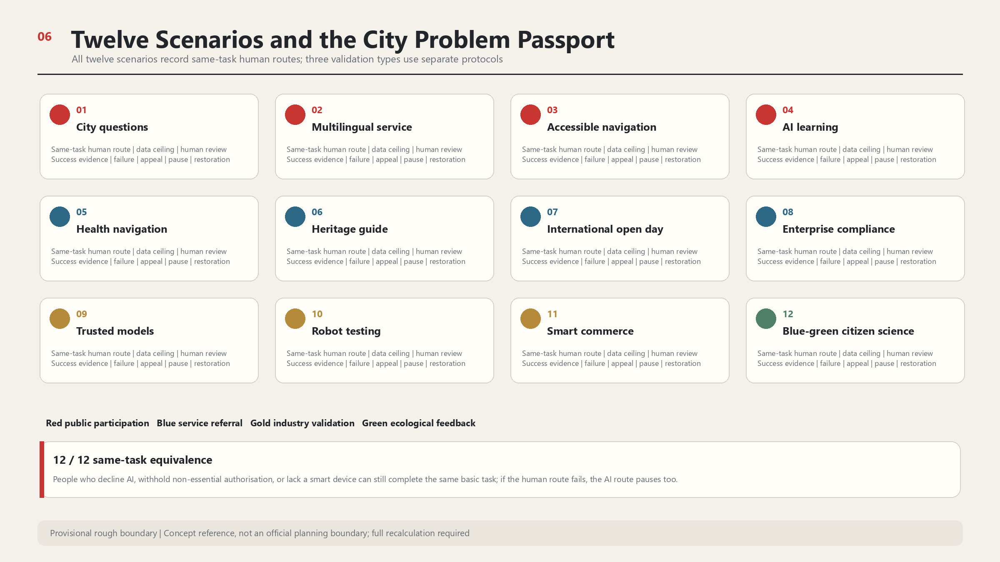

Provisional rough geometry supports conceptual design and low-confidence recalculation only; it is not an official planning boundary.
AI Scenarios and Public-Space Metrics
Overall Structure

Land Use and Operating Loop

Three Zones and Four Landmarks

Walking and Blue-Green Network

Metrics and Evidence

Twelve Scenarios and Same-Task Routes

Phasing and Evidence Gates

Task Coverage
Overview map | Three-level scope | Key areas | Land-use partition | Walking and cycling | Blue-green public space | Buildings | Renewal projects | AI scenarios | Core metrics | Self-check status | Sources | Assumptions
How one problem moves through the belt
An urban problem enters through the Qinghuayuan exterior and corridor public spaces, is translated at AI Origin, enters controlled validation at Zhongzhiyuan, and reaches adoption and service at Dazhongsi. Xiaoyue River and corridor users return feedback to continue, modify, or retire it. The Zhongguancun Technology Services Wing supports every stage.
City Problem Passport
Eleven required fields cover place, affected groups, non-AI baseline, data ceiling, responsibility, evidence, failure, appeal, and restoration.
Same-task equivalence
All twelve scenarios record a human or low-technology route. If the human route fails, the AI route pauses too.
Five evidence gates
G0 to G4 control registration, baseline and rights, controlled pilots, independent retesting, and continuation or retirement.
Regional Interfaces and Long-Term Operations
Beiwei Community, Future Science City, Huairou Science City, Beijing E-Town, and the Beijing-Tianjin-Hebei network are proposed retesting interfaces only and do not indicate existing partnerships. One secretariat, three district stations, two specialist wings, and one public committee maintain activities, source review, appeals, and annual review.
Sources, Assumptions, and Self-Check
23 sources and 9 key assumptions form the evidence register. Provisional boundaries, positional mismatch, planning controls, ownership, heritage, transport, municipal capacity, blue-green baselines, and evidence expiry are explicit conditions for further work.